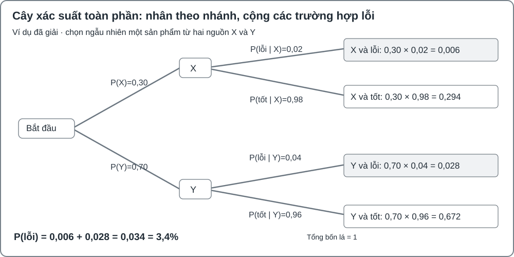
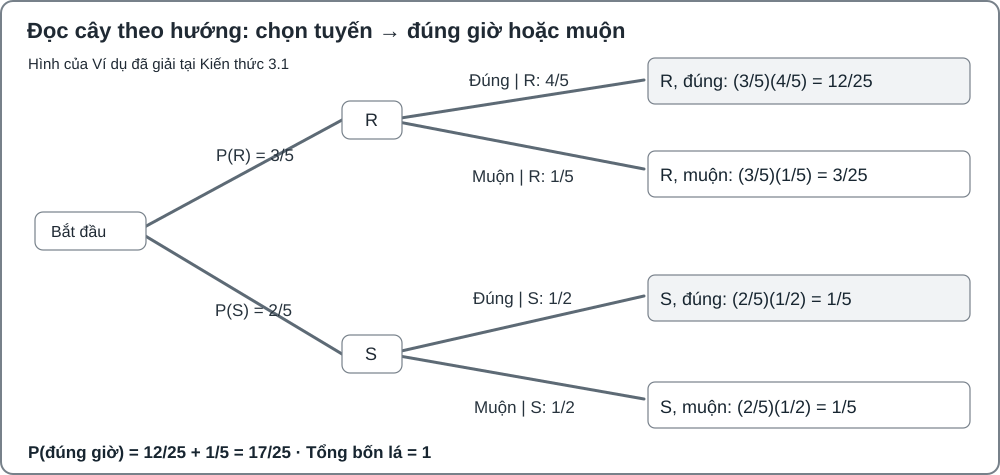

HỌC THEO CHUYÊN ĐỀ · CĐ21 · TOÁN THPT
Khám phá thêm: Mô hình trực quan Chuyên đề 21 (tùy chọn).
Kiến thức
Khi biết thêm thông tin, xác suất của một biến cố có thể thay đổi. Từ việc chỉ xét những kết quả còn phù hợp, em sẽ hiểu xác suất có điều kiện, cách nhân xác suất trên một đường đi, cách cộng các nguồn rời nhau và cách suy ngược thông tin bằng Bayes. Mỗi kiến thức được hình thành từ một tình huống cụ thể, sau đó có ví dụ đầy đủ và bài Vận dụng.
Những kiến thức cần thiết về không gian mẫu, biến cố, giao của hai biến cố, tính đồng khả năng và quy tắc nhân độc lập được nhắc lại ngay trong bài; không phải học xong Chuyên đề 20 mới có thể bắt đầu.
1. Biết thêm thông tin và xác suất có điều kiện
1.1. Biết thêm thông tin là đổi nhóm đang xét
Khi rút ngẫu nhiên một học sinh trong cả lớp, ta xét mọi học sinh như những kết quả có thể xảy ra. Nhưng giả sử em đã biết người được rút thuộc câu lạc bộ cờ: lúc này những học sinh không tham gia câu lạc bộ không còn phù hợp với thông tin đã biết. Câu hỏi “người ấy có đeo kính không?” cần được trả lời trong nhóm câu lạc bộ, không phải trên toàn lớp.
Đó chính là ý tưởng của xác suất có điều kiện. Ta gọi \(B\) là biến cố đã biết và \(A\) là biến cố cần tìm. Trong những trường hợp thuộc \(B\), chỉ phần thuộc cả \(A\) và \(B\) là thuận lợi. Vì vậy, khi biết \(B\) xảy ra, nhóm được xét chuyển từ toàn bộ \(\Omega\) sang \(B\); không thể tự thay bằng xác suất thông thường của \(A\). Nếu \(P(B)=0\), cách xét “trong nhóm \(B\)” không xác định theo công thức điều kiện thông thường.
ĐỊNH NGHĨA — Xác suất khi đã biết một biến cố
Biết B xảy ra là chọn lại trong nhóm B: chỉ các kết quả thuộc B còn được xét; để xác suất điều kiện có nghĩa cần \(P(B)>0\). Không được đồng nhất \(P(A\mid B)\) và \(P(B\mid A)\).
Ví dụ
Đề bài: Một lớp có 20 học sinh, trong đó 8 bạn tham gia câu lạc bộ cờ và 5 trong 8 bạn ấy đeo kính. Chọn đều một học sinh, biết bạn được chọn thuộc câu lạc bộ cờ. Tính xác suất bạn ấy đeo kính.
Lời giải: Thông tin “thuộc câu lạc bộ cờ” giới hạn nhóm đang xét còn 8 bạn. Trong nhóm này có 5 bạn đeo kính, nên xác suất cần tìm là \(\frac{5}{8}\). Không lấy \(\frac{5}{20}\), vì 20 là quy mô cả lớp, không phải nhóm đã biết. Việc chọn đều là giả thiết cần thiết cho cách đếm theo số học sinh.
Kiến thức cần ghi nhớ
Một thông tin đã biết làm thay đổi nhóm kết quả đang xét. Biến cố cần hỏi là phần giao với nhóm đó; không đổi chiều hai biến cố.
Vận dụng
Trong 24 vé khác nhau được chọn đều có 9 vé xanh, 6 trong 9 vé xanh có dấu sao. Đã biết vé rút ra là xanh. Hỏi xác suất vé đó có dấu sao?
Đối chiếu
Nhóm điều kiện gồm 9 vé xanh; có 6 vé trong nhóm đó có sao. Do đó \(P(\text{sao}\mid\text{xanh})=\frac69=\frac23\), không phải \(\frac{6}{24}\). **Kiểm lỗi** Nếu chia cho 24, em đã quên thu hẹp Ω khi biết màu vé. Tự gạch riêng 9 vé xanh, đánh dấu 6 vé sao rồi thử lại. Ôn lại mục Kiến thức 1.1 (đổi nhóm đang xét) và Bài luyện 1 tại Luyện tập 1.1.1.2. Từ vùng giao đến công thức xác suất có điều kiện
Đôi khi ta không được cho số người hoặc số phiếu trong từng nhóm, mà chỉ biết các xác suất của biến cố. Ta vẫn muốn giữ đúng cách nhìn từ bài trước: khi biết \(B\) xảy ra, ta chỉ quan tâm phần \(B\), còn trường hợp vừa \(A\) vừa \(B\) chính là vùng giao \(A\cap B\). Lấy phần giao so với toàn bộ phần đã biết sẽ cho xác suất của \(A\) trong điều kiện \(B\).
Nếu các kết quả ban đầu đồng khả năng, ta có thể dùng tỉ số \(\frac{n(A\cap B)}{n(B)}\). Khi dữ liệu cho dưới dạng xác suất, cùng ý tưởng ấy được viết bằng cách chia xác suất giao cho xác suất của biến cố đã biết. Điều kiện \(P(B)>0\) không thể bỏ qua vì không được chia cho 0.
Khi số liệu có hai nhóm và hai đặc điểm, ta có thể xếp số người hoặc số vật vào bảng dữ liệu thống kê 2×2. Mỗi ô cho biết số trường hợp thỏa đồng thời hai điều kiện; tổng của hàng hoặc cột cho biết có bao nhiêu trường hợp thuộc nhóm đã biết. Chẳng hạn, xét dữ liệu giả định về 30 học sinh như sau:
| Nhóm học sinh | Đeo kính | Không đeo kính | Tổng |
|---|---|---|---|
| Tham gia câu lạc bộ cờ | 5 | 7 | 12 |
| Không tham gia câu lạc bộ cờ | 4 | 14 | 18 |
| Tổng | 9 | 21 | 30 |
Nếu chọn đều một học sinh và biết bạn ấy thuộc câu lạc bộ cờ, ta chỉ xét hàng 12 bạn: có 5 bạn đeo kính nên \(P(\text{đeo kính}\mid\text{câu lạc bộ cờ})=\frac{5}{12}\). Ngược lại, biết bạn ấy đeo kính thì phải xét cột 9 bạn: trong đó 5 bạn thuộc câu lạc bộ nên \(P(\text{câu lạc bộ cờ}\mid\text{đeo kính})=\frac{5}{9}\). Cùng một ô giao nhưng mẫu số khác nhau, vì thông tin đã biết đã đổi. Đây là bảng minh họa để học cách tính xác suất; không suy quan hệ nhân quả giữa việc tham gia câu lạc bộ và đeo kính. Chú ý vị trí sau vạch đứng: \(P(A\mid B)\) hỏi về \(A\) khi đã biết \(B\), khác với \(P(B\mid A)\).
CÔNG THỨC — Xác suất có điều kiện
\(P(A\mid B)=\frac{P(A\cap B)}{P(B)},\qquad P(B)>0.\) \(P(A\cap B)\) là phần giao; \(P(B)\) là toàn bộ nhóm đã biết. Khi các phần tử của B đồng khả năng có thể dùng \(\frac{n(A\cap B)}{n(B)}\).
Hai chiều điều kiện không được đánh tráo. Với bảng 30 học sinh đã giới thiệu, 12 bạn thuộc câu lạc bộ cờ, 9 bạn đeo kính, 5 bạn ở cả hai nhóm. Đặt \(A=\{\text{đeo kính}\}\), \(B=\{\text{tham gia câu lạc bộ cờ}\}\). Khi ấy
Vì sao khác nhau? Tử số đều là phần giao; mẫu của xác suất điều kiện là phần đã biết sau dấu \(\mid\). Điều kiện B là chọn hàng câu lạc bộ, điều kiện A là chọn cột đeo kính. Không thể dùng \(\frac5{30}\) làm đáp số vì chưa thu hẹp mẫu. Nếu \(P(B)=0\), công thức \(P(A\mid B)\) không xác định; không tùy tiện đặt bằng 0.
Ví dụ
Đề bài: Chọn ngẫu nhiên đều một số nguyên từ 1 đến 10. Gọi \(A\) là biến cố “số chẵn” và \(B\) là biến cố “số chia hết cho 3”. Tính \(P(A\mid B)\).
Lời giải: Do chọn đều, \(\Omega=\{1,2,\ldots,10\}\). Biến cố đã biết là \(B=\{3,6,9\}\), gồm ba số; giao \(A\cap B=\{6\}\) chỉ có một số. Vậy \(P(A\mid B)=\frac{n(A\cap B)}{n(B)}=\frac{1}{3}\). Kiểm bằng công thức: \(P(A\cap B)=\frac{1}{10}\), \(P(B)=\frac{3}{10}>0\), nên \(P(A\mid B)=\frac{\frac{1}{10}}{\frac{3}{10}}=\frac{1}{3}\). Không dùng \(P(A)=\frac{5}{10}\) làm mẫu số vì đề không cho biết \(A\) trước.
Kiến thức cần ghi nhớ
Muốn tính \(P(A\mid B)\), đặt đúng nhóm đã biết \(B\) làm mẫu số và phải có \(P(B)>0\).
Vận dụng
Gieo xúc xắc sáu mặt cân đối. A là 'chia hết cho 3', B là 'số chẵn'. Tính \(P(A\mid B)\).
Đối chiếu
\(B=\{2,4,6\},\ A\cap B=\{6\};\ P(A\mid B)=\frac{\frac16}{\frac36}=\frac13\). Mẫu số \(P(B)=\frac12>0\). **Kiểm lỗi** Nếu viết \(\dfrac12\), hãy kiểm tra hai khả năng: em đã lấy \(P(B)=\dfrac12\) làm đáp số, hoặc đã tính ngược \(P(B\mid A)=\dfrac12\). Cả hai đều không trả lời đề bài. Phải giữ B là nhóm đã biết: trong ba mặt chẵn chỉ có mặt 6 chia hết cho 3, nên \(P(A\mid B)=\dfrac13\). Ôn lại mục Kiến thức 1.2 (công thức xác suất có điều kiện) và Bài luyện 2 tại Luyện tập 1.2.1.3. Quy tắc nhân tổng quát cho các lượt phụ thuộc
Khi lấy hai thẻ liên tiếp mà không hoàn lại, chiếc thẻ thứ nhất thực sự làm thay đổi số thẻ còn lại. Chẳng hạn, rút được một thẻ màu xanh ở lượt đầu sẽ khiến số thẻ xanh và tổng số thẻ ở lượt sau đều giảm. Bởi thế, xác suất rút xanh ở lượt thứ hai khi đã biết lượt đầu xanh có thể khác xác suất xanh ở lần rút đầu.
Muốn tính xác suất hai sự việc \(A\) rồi \(B\) cùng xảy ra, trước hết ta tính khả năng đi vào nhánh \(A\). Sau đó, trong chính nhánh đã xảy ra \(A\), ta tính khả năng đi tiếp tới \(B\). Tích hai xác suất ấy cho khả năng đi trọn đường \(A\to B\). Đây là quy tắc nhân có điều kiện: không cần giả sử hai lượt độc lập, nhưng phải cập nhật thông tin ở bước sau và nói rõ điều kiện đang xét.
CÔNG THỨC — Xác suất đồng thời theo điều kiện
\(P(A\cap B)=P(A)P(B\mid A)\quad\text{khi }P(A)>0.\) Tương tự \(P(A\cap B)=P(B)P(A\mid B)\) nếu \(P(B)>0\). Khi rút không hoàn lại, phải cập nhật xác suất nhánh sau.
Ví dụ
Đề bài: Một túi có 3 thẻ xanh lục và 4 thẻ cam, tất cả các thẻ phân biệt. Rút đều ngẫu nhiên hai thẻ liên tiếp không hoàn lại. Tính xác suất cả hai thẻ đều xanh lục.
Lời giải: Xác suất thẻ đầu xanh lục là \(\frac{3}{7}\). Sau khi đã rút xanh lục, túi còn 2 thẻ xanh lục trong tổng 6 thẻ, nên xác suất xanh lục ở lượt hai khi lượt đầu xanh lục là \(\frac{2}{6}\). Theo quy tắc nhân có điều kiện, xác suất cả hai xanh lục bằng \((\frac{3}{7})( \frac{2}{6})=\frac{1}{7}\). Không được dùng \((\frac{3}{7})^2\) vì số thẻ đã thay đổi sau lượt đầu.
Nếu \(P(A)=0\), vì \(A\cap B\subseteq A\) nên chắc chắn \(P(A\cap B)=0\). Khi ấy không viết \(P(B\mid A)\) theo công thức thông thường vì mẫu \(P(A)\) bằng \(0\). Tương tự nếu \(P(B)=0\), giao có xác suất \(0\) nhưng không dùng \(P(A\mid B)\). Vì vậy, quy tắc nhân vẫn xử lý được trường hợp xác suất bằng \(0\), chỉ cần tách ra trước khi chia.
Nhân xác suất theo ba bước phụ thuộc. Với \(P(A)>0\), \(P(A\cap B)>0\), từ quy tắc nhân hai lần:
Tại bước ba, điều kiện gồm cả hai bước trước; không được nhân \(P(C)\) nếu quá trình không độc lập. Nhánh có xác suất 0 cho giao bằng 0 nhưng không được lập phân số điều kiện mẫu 0.
Ví dụ bổ sung. Trong túi có 4 bi đỏ và 3 bi xanh phân biệt, rút liên tiếp ba bi không hoàn lại. Xác suất tất cả đỏ là \(\frac47\cdot\frac36\cdot\frac25=\frac4{35}\). Kiểm bằng tổ hợp: \(\frac{\binom43}{\binom73}=\frac{4}{35}\). Hai cách khớp vì khi rút theo thứ tự ta cập nhật số viên còn lại, còn khi đếm nhóm không thứ tự ta dùng tổ hợp ở cả tử và mẫu. Lấy \((\frac{4}{7})^3\) là sai vì đã mặc định có hoàn lại.
Kiến thức cần ghi nhớ
Nhân xác suất dọc một đường theo đúng điều kiện của từng lượt; không hoàn lại thường làm xác suất lượt sau thay đổi.
Vận dụng
Có 4 thẻ đỏ và 5 thẻ xanh khác nhau; rút liên tiếp hai thẻ không hoàn lại, đều mỗi lượt. Tính \(P(\text{đỏ đầu}\cap\text{xanh sau})\).
Đối chiếu
\(P(\text{đỏ đầu})=\frac49\); sau đó còn 8 thẻ, 5 xanh nên \(P(\text{xanh sau}\mid\text{đỏ đầu})=\frac58\). Giao = \(\frac49\cdot\frac58=\frac5{18}\). **Kiểm lỗi** Nếu dùng \(\frac49\cdot\frac59\), em chưa đổi tổng số thẻ ở lượt hai từ 9 xuống 8. Vẽ một nhánh đỏ trước rồi ghi nội dung túi còn lại. Ôn lại mục Kiến thức 1.3 (quy tắc nhân cho lượt phụ thuộc) và Bài luyện 3 tại Luyện tập 1.3.1.4. Khi nào xác suất có điều kiện không thay đổi?
Ta có thể cảm thấy hai biến cố liên quan chỉ vì chúng cùng nhắc tới một phép thử, hoặc cảm thấy chúng độc lập chỉ vì tên gọi khác nhau. Cả hai trực giác ấy đều có thể sai. Điều cần kiểm tra là: nếu biết biến cố \(B\) đã xảy ra, xác suất của \(A\) có thay đổi hay không?
Khi \(P(B)>0\), nếu xác suất của \(A\) trong nhóm \(B\) bằng xác suất của \(A\) trên toàn bộ không gian mẫu, thông tin \(B\) không làm thay đổi khả năng của \(A\). Từ công thức xác suất có điều kiện, điều đó tương đương với \(P(A\cap B)=P(A)P(B)\). Đẳng thức tích này là tiêu chuẩn kiểm tra độc lập kể cả khi một biến cố có xác suất 0; còn xác suất có điều kiện thì không được viết nếu mẫu số bằng 0. Độc lập cũng không phải là xung khắc: hai biến cố xung khắc có xác suất dương không thể độc lập.
TÍNH CHẤT — Tiêu chuẩn độc lập
\(A\text{ và }B\text{ độc lập}\iff P(A\cap B)=P(A)P(B).\) Khi \(P(B)>0\), độc lập tương đương \(P(A\mid B)=P(A)\). Hai biến cố xung khắc có xác suất dương không độc lập.
Ví dụ
Đề bài: Gieo hai xúc xắc cân đối và độc lập. Gọi \(A\) là biến cố “xúc xắc thứ nhất ra số chẵn” và \(B\) là biến cố “xúc xắc thứ hai ra số lớn hơn 4”. Kiểm tra hai biến cố có độc lập không.
Lời giải: Trong 36 cặp số chấm đồng khả năng, \(A\) có xác suất \(\frac{3}{6}=\frac{1}{2}\), còn \(B\) có xác suất \(\frac{2}{6}=\frac{1}{3}\). Để đồng thời thỏa \(A\) và \(B\), xúc xắc thứ nhất có 3 lựa chọn chẵn và thứ hai có 2 lựa chọn lớn hơn 4, nên \(P(A\cap B)=\frac{6}{36}=\frac{1}{6}\). Vì \(P(A)P(B)=(\frac{1}{2})( \frac{1}{3})=\frac{1}{6}=P(A\cap B)\), hai biến cố độc lập. Kết luận đến từ đẳng thức xác suất, không chỉ từ việc chúng nhắc hai xúc xắc khác nhau.
Kiến thức cần ghi nhớ
Độc lập cần kiểm \(P(A\cap B)=P(A)P(B)\). Không đồng nhất với xung khắc; chú ý điều kiện dương khi nói bằng xác suất có điều kiện.
Vận dụng
Tung hai đồng xu cân đối, độc lập. A: đồng xu đầu ngửa; B: có đúng một mặt ngửa trong cả hai lượt. A, B có độc lập không?
Đối chiếu
\(\Omega=\{NN,NS,SN,SS\}\). \(P(A)=\frac24,\ P(B)=\frac24,\ P(A\cap B)=\frac14\) (chỉ NS). Vì \(\frac14=\frac12\cdot\frac12\), A và B độc lập trong mô hình này. **Kiểm lỗi** Nếu kết luận phụ thuộc chỉ vì B có nhắc đồng xu đầu, em đã suy theo ngôn ngữ. Hãy đếm giao và tích; cả hai cùng bằng \(\frac{1}{4}\). Ôn lại mục Kiến thức 1.4 (dấu hiệu độc lập) và Bài luyện 4 tại Luyện tập 1.4.2. Xác suất toàn phần và công thức Bayes
2.1. Xác suất toàn phần: cộng các đường đi đến cùng kết quả
Một sản phẩm bị lỗi có thể đến từ dây chuyền X hoặc dây chuyền Y. Nếu X làm ra ít sản phẩm nhưng có tỉ lệ lỗi cao, còn Y làm ra nhiều sản phẩm với tỉ lệ lỗi thấp, ta không thể cộng ngay hai tỉ lệ lỗi. Ta cần biết tỉ trọng sản phẩm từ từng nguồn, bởi một sản phẩm được chọn ngẫu nhiên phải đến từ một trong các nguồn trước khi có tình trạng lỗi hay không lỗi.
Gọi \(L\) là biến cố “sản phẩm lỗi”. Trong trường hợp hai nguồn X và Y phân chia toàn bộ sản phẩm, không chồng nhau, những sản phẩm lỗi chia thành hai nhóm rời nhau: “từ X và lỗi” hoặc “từ Y và lỗi”. Với mỗi nhóm ta nhân xác suất nguồn với xác suất lỗi khi biết nguồn; cuối cùng cộng hai đường lỗi, vì chúng không thể đồng thời xảy ra cho cùng một sản phẩm. Đó là bản chất của công thức xác suất toàn phần. Các xác suất điều kiện cần xác định trên nguồn có xác suất dương; không có yêu cầu nguồn phải độc lập với tình trạng lỗi.
CÔNG THỨC — Xác suất toàn phần hai nhánh
Nếu \(X\cap Y=\varnothing\), \(X\cup Y=\Omega\) và \(P(X),P(Y)>0\) thì \(P(L)=P(X)P(L\mid X)+P(Y)P(L\mid Y).\) Đây là tổng hai đường đi rời nhau, không phải tổng trần hai xác suất điều kiện.
Ví dụ
Đề bài: Nguồn X đóng góp 30% sản phẩm và có tỉ lệ lỗi 2%; nguồn Y đóng góp 70% sản phẩm và có tỉ lệ lỗi 4%. Chọn ngẫu nhiên đều một sản phẩm trong toàn bộ sản phẩm. Tính xác suất sản phẩm bị lỗi.
Lời giải: Vì một sản phẩm chỉ đến từ X hoặc Y và hai nguồn chiếm toàn bộ sản lượng, biến cố lỗi tách thành hai đường rời nhau. Đường “X rồi lỗi” có xác suất \(0{,}30\cdot0{,}02=0{,}006\); đường “Y rồi lỗi” có xác suất \(0{,}70\cdot0{,}04=0{,}028\). Cộng hai đường cho \(P(\text{lỗi})=0{,}006+0{,}028=0{,}034=3{,}4\%\). Không cộng trực tiếp 2% và 4%, vì hai nguồn có tỉ trọng sản lượng khác nhau.

Hướng dẫn đọc hình: Từ điểm xuất phát, chọn nhánh X hoặc Y theo tỉ trọng 30% và 70%. Tại mỗi nguồn, tiếp tục theo nhánh lỗi hoặc tốt trong nguồn ấy. Nhân các xác suất trên một đường để tìm xác suất ở lá; cộng hai lá lỗi được 0,034. Tổng bốn lá bằng 1.
Sơ đồ cây có thể có nhiều hơn hai nguồn (mở rộng cùng nguyên lí). Nếu \(B_1,\ldots,B_m\) đôi một xung khắc, phủ toàn bộ \(\Omega\) và \(P(B_i)>0\), thì các biến cố \(L\cap B_i\) chia \(L\) thành những phần không trùng nhau, do đó:
Nếu hai nguồn là một biến cố \(A\) và biến cố đối \(\overline A\), đặt \(B\) là kết quả đang xét. Khi \(0<P(A)<1\), công thức hai nguồn có dạng quen thuộc:
Nếu một nguồn có xác suất 0 thì bỏ đường ấy vì xác suất giao bằng 0; không tính xác suất điều kiện có mẫu 0. Với hai nguồn, chỉ cần \(m=2\). Không cộng trần các xác suất điều kiện hoặc bỏ sót một nguồn.
Ví dụ bổ sung. Ba nguồn chiếm lần lượt \(20\%,30\%,50\%\) sản lượng, có tỷ lệ lỗi lần lượt \(1\%,2\%,4\%\). Một sản phẩm được chọn ngẫu nhiên đều từ toàn bộ lô, mỗi sản phẩm thuộc đúng một nguồn. Xác suất lỗi bằng \(0{,}2\cdot0{,}01+0{,}3\cdot0{,}02+0{,}5\cdot0{,}04=0{,}028=2{,}8\%\). Cộng \(1\%+2\%+4\%\) sai vì ba tỷ lệ có mẫu nguồn khác nhau.
Kiến thức cần ghi nhớ
Xác suất toàn phần là tổng các xác suất đường đi rời nhau. Trong mỗi đường đi, nhân xác suất nguồn với xác suất kết quả khi biết nguồn.
Vận dụng
Nguồn X cung cấp \(\frac{1}{4}\) sản phẩm, tỉ lệ lỗi \(\frac{1}{10}\); nguồn Y cung cấp \(\frac{3}{4}\), tỉ lệ lỗi \(\frac{1}{30}\). Chọn đều một sản phẩm. Xác suất gặp lỗi?
Đối chiếu
\(P(\text{lỗi})=\frac14\cdot\frac1{10}+\frac34\cdot\frac1{30}=\frac1{40}+\frac1{40}=\frac1{20}\). **Kiểm lỗi** Nếu ra \(\frac1{10}+\frac1{30}\), em đã quên nhân tỉ trọng nguồn; làm lại từng đường 'chọn nguồn → lỗi' trước khi cộng. Ôn lại mục Kiến thức 2.1 (công thức xác suất toàn phần) và Bài luyện 5 tại Luyện tập 2.1.2.2. Bayes: đi từ kết quả quan sát ngược về nguồn
Một nhà máy cho biết sản phẩm từ dây chuyền A có xác suất mang dấu hiệu H là 80%. Khi bắt gặp một sản phẩm có dấu hiệu H, ta có thể kết luận nó đến từ A với xác suất 80% không? Chưa thể, vì ngoài A còn có các dây chuyền khác cũng có thể tạo ra dấu hiệu ấy. Câu hỏi đã đảo chiều điều kiện: từ “thấy H khi biết A” sang “thuộc A khi đã thấy H”.
Muốn trả lời, trước hết ta tính xác suất mọi cách tạo ra dấu hiệu H, sử dụng công thức toàn phần. Tiếp theo, ta tính riêng xác suất sản phẩm vừa đến từ A vừa có H. Trong số tất cả sản phẩm có H, phần thuộc A bằng xác suất đường “A rồi H” chia cho xác suất H chung. Tỉ số đó là công thức Bayes; mẫu số luôn là xác suất sự kiện đã quan sát, và phải dương.
CÔNG THỨC — Bayes – đảo chiều câu hỏi
\(P(Y\mid L)=\frac{P(Y)P(L\mid Y)}{P(L)},\qquad P(L)>0.\) Với hai nhánh X,Y phân hoạch, mẫu số là công thức toàn phần của L. Xác suất của nguồn sau khi thấy L không tự bằng xác suất thấy L khi biết nguồn.
Ví dụ
Đề bài: Nguồn A cung cấp 20% sản phẩm và cho dấu hiệu H ở 80% sản phẩm của mình; nguồn B cung cấp 80% còn lại và cho dấu hiệu H ở 10% sản phẩm của mình. Chọn ngẫu nhiên một sản phẩm. Biết sản phẩm có dấu hiệu H, tính xác suất nó đến từ A.
Lời giải: Gọi \(H\) là biến cố “có dấu hiệu”. Xác suất toàn phần là \(P(H)=0{,}2\cdot0{,}8+0{,}8\cdot0{,}1=0{,}16+0{,}08=0{,}24\). Riêng đường “A và H” có xác suất \(0{,}2\cdot0{,}8=0{,}16\). Do đó \(P(A\mid H)=\frac{0{,}16}{0{,}24}=\frac{2}{3}\). Kết quả khác 80% vì 80% trả lời câu hỏi ngược chiều: “có H khi biết nguồn A”. Khi hai nguồn là \(A\) và \(\overline A\), với \(0<P(A)<1\) và \(P(H)>0\), thế công thức toàn phần vào mẫu của Bayes:
Mẫu số gồm cả hai nguồn có thể sinh ra dấu hiệu H; đây là lý do phải cộng trước khi chia.
Kiểm kết quả Bayes bằng tổng hậu nghiệm. Với ba nguồn ở mục 2.1, xác suất “nguồn 3 và lỗi” bằng \(0{,}5\cdot0{,}04=0{,}02\); tổng lỗi bằng \(0{,}028>0\). Do đó:
Nguồn 3 tạo ra 50% sản phẩm nhưng chiếm hơn 71% sản phẩm lỗi trong mô hình này do tỷ lệ lỗi cao hơn. Hai nguồn còn lại có hậu nghiệm \(\frac{0{,}002}{0{,}028}=\frac{1}{14}\) và \(\frac{0{,}006}{0{,}028}=\frac{3}{14}\). Tổng \(\frac{1}{14}+\frac{3}{14}+\frac{5}{7}=1\), là phép kiểm toàn bộ nguồn đã phủ hết mẫu sau khi biết lỗi. Không nhầm xác suất nguồn khi thấy lỗi với tỷ lệ lỗi khi biết nguồn.
Kiến thức cần ghi nhớ
Bayes đảo chiều điều kiện: lấy xác suất đường nguồn–kết quả chia cho xác suất của tất cả đường dẫn tới kết quả đã quan sát.
Vận dụng
Nguồn X chiếm \(\frac{2}{5}\) sản phẩm, tỉ lệ lỗi \(\frac{1}{10}\); Y chiếm \(\frac{3}{5}\), tỉ lệ lỗi \(\frac{1}{5}\). Biết sản phẩm chọn ra bị lỗi, xác suất nó thuộc Y?
Đối chiếu
\(P(Y\cap\text{lỗi})=\frac35\cdot\frac15=\frac3{25}\); \(P(X\cap\text{lỗi})=\frac25\cdot\frac1{10}=\frac1{25}\). \(P(\text{lỗi})=\frac4{25}\) nên \(P(Y\mid\text{lỗi})=\frac{\frac3{25}}{\frac4{25}}=\frac34\). **Kiểm lỗi** Nếu trả lời \(\frac{1}{5}\), em mới tính xác suất lỗi khi đã biết Y, chưa đảo chiều. Cộng tất cả nhánh lỗi thành mẫu số rồi chia đường Y–lỗi. Ôn lại mục Kiến thức 2.2 (Bayes) và Bài luyện 6 tại Luyện tập 2.2.3. Sơ đồ cây và diễn giải xác suất
3.1. Đọc sơ đồ cây: nhân trên đường, cộng tại đích
Sơ đồ cây hữu ích nhất khi một quá trình diễn ra qua nhiều lựa chọn nối tiếp: chọn tuyến đường, rồi xét có đến đúng giờ hay không; chọn nguồn hàng, rồi xét hàng lỗi hay tốt. Mỗi nhánh xuất phát từ một nút biểu diễn một khả năng trong điều kiện đã đi tới nút ấy. Vì thế, tổng các xác suất rẽ ra từ cùng một nút phải bằng 1.
Một đường đi từ gốc đến lá tương ứng với một trường hợp đồng thời, nên ta nhân các xác suất dọc đường. Những đường đi kết thúc bằng cùng một kết quả như “đến đúng giờ” là các trường hợp rời nhau, nên ta cộng xác suất các lá ấy. Kiểm lại tổng toàn bộ lá bằng 1 giúp phát hiện nhánh bỏ sót hoặc xác suất ghi nhầm. Khi đã quan sát một kết quả, muốn truy ngược nguồn, ta lấy xác suất lá nguồn-kết quả chia cho tổng các lá có kết quả được quan sát.
PHƯƠNG PHÁP — Ba thao tác đọc cây xác suất
Tại mỗi nút, tổng xác suất các nhánh ra bằng 1. Nhân dọc từ gốc đến lá để có xác suất giao; cộng các lá rời nhau đưa tới kết quả cần tính; khi đảo điều kiện, chia lá mục tiêu cho tổng các lá đã quan sát. Tổng toàn bộ các lá cuối phải bằng 1.
Ví dụ
Đề bài: Một hành khách chọn tuyến R với xác suất \(\frac{3}{5}\), chọn tuyến S với xác suất \(\frac{2}{5}\). Nếu chọn R, xác suất đến đúng giờ là \(\frac{4}{5}\); nếu chọn S, xác suất đến đúng giờ là \(\frac{1}{2}\). Hãy tìm xác suất đến đúng giờ và kiểm tra tổng bốn lá trên cây.
Lời giải: Gọi \(D\) là biến cố đến đúng giờ. Tại nút R, hai xác suất nhánh có điều kiện là \(P(D\mid R)=\dfrac45\) và \(P(\bar D\mid R)=\dfrac15\). Nhân với xác suất chọn R để được hai xác suất lá: \(P(R\cap D)=\dfrac35\cdot\dfrac45=\dfrac{12}{25}\), \(P(R\cap\bar D)=\dfrac35\cdot\dfrac15=\dfrac3{25}\). Tại nút S, mỗi xác suất nhánh có điều kiện bằng \(\dfrac12\), nên hai xác suất lá đều bằng \(\dfrac25\cdot\dfrac12=\dfrac15\). Bốn lá cộng thành \(\dfrac{12}{25}+\dfrac3{25}+\dfrac15+\dfrac15=1\). Hai lá đúng giờ rời nhau, vì vậy \(P(D)=\dfrac{12}{25}+\dfrac15=\dfrac{17}{25}\). Phân biệt xác suất nhánh (trong một tuyến) với xác suất lá (tính từ gốc).

Hướng dẫn đọc hình: Trước hết đọc xác suất chọn R hoặc S tại gốc. Trên từng tuyến, tổng hai nhánh đúng giờ và muộn bằng 1. Nhân các xác suất trên cùng một đường; khi hỏi khả năng đến đúng giờ, cộng hai lá R–đúng và S–đúng. Kiểm tra tổng bốn lá bằng 1.
Kiến thức cần ghi nhớ
Tại mỗi nút, tổng nhánh ra bằng 1; nhân dọc đường, cộng các lá rời nhau dẫn tới cùng kết quả; tổng lá cuối bằng 1.
Vận dụng
Chọn lớp A với xác suất \(\frac{3}{5}\), trong A tỉ lệ thẻ đỏ là \(\frac{3}{10}\); lớp B với xác suất \(\frac{2}{5}\), trong B tỉ lệ đỏ \(\frac{1}{4}\). Lập bốn lá đỏ/không đỏ và tính \(P(\text{đỏ})\).
Đối chiếu
\(P(A\cap\text{đỏ})=\frac9{50}\), \(P(A\cap\text{không đỏ})=\frac{21}{50}\); \(P(B\cap\text{đỏ})=\frac1{10}\), \(P(B\cap\text{không đỏ})=\frac3{10}\). Tổng bốn lá bằng 1, \(P(\text{đỏ})=\frac9{50}+\frac1{10}=\frac7{25}\). **Kiểm lỗi** Nếu bốn lá không cộng thành 1, hãy rà mỗi nút: đỏ và không đỏ trong A phải có tổng 1; tương tự B. Đừng cộng trực tiếp \(\frac{3}{10}\) và \(\frac{1}{4}\). Ôn lại mục Kiến thức 3.1 (đọc sơ đồ cây) và Bài luyện 7 tại Luyện tập 3.1.3.2. Tỉ lệ nền và bẫy kết luận từ một dấu hiệu
Một thiết bị nhận biết lỗi có thể phát hiện rất tốt những sản phẩm thực sự lỗi, nhưng kết quả “máy báo lỗi” chưa chắc đồng nghĩa với xác suất hàng lỗi cao. Nếu hàng lỗi rất hiếm, chỉ một tỉ lệ báo nhầm nhỏ trong nhóm hàng tốt đông đảo cũng có thể tạo ra nhiều thông báo lỗi. Để hiểu độ tin cậy sau khi thấy dấu hiệu, ta phải tính cả tỉ lệ hàng lỗi ban đầu, gọi là tỉ lệ nền.
Hãy chia sản phẩm thành hai nguồn: thật sự lỗi \(H\) và không lỗi \(\bar H\). Cả hai nguồn đều có thể đưa đến kết quả báo dấu hiệu \(+\): máy báo đúng từ nhóm \(H\) và báo nhầm từ nhóm \(\bar H\). Xác suất một sản phẩm thật sự lỗi khi đã bị báo bằng xác suất đi theo nhánh “lỗi rồi báo” chia cho tổng xác suất của tất cả các nhánh dẫn tới báo. Đây là công thức Bayes được nhìn bằng tần suất, không phải một công thức hoàn toàn mới.
CÔNG THỨC — Bayes có xét tỉ lệ nền
\(P(H\mid +)=\frac{P(H)P(+\mid H)}{P(H)P(+\mid H)+P(\bar H)P(+\mid\bar H)},\qquad P(+)>0.\) Cần biết tỉ lệ nền, khả năng phát hiện khi thực sự H và tỉ lệ báo nhầm khi không H. Không kết luận \(P(H\mid +)=P(+\mid H)\); nếu không có trường hợp được báo thì xác suất điều kiện ấy không xác định bằng công thức này.
Ví dụ
Đề bài: Giả sử một lô hàng có 1% sản phẩm lỗi. Thiết bị báo lỗi ở 95% sản phẩm lỗi và báo nhầm ở 10% sản phẩm tốt. Chọn ngẫu nhiên một sản phẩm; biết thiết bị đã báo lỗi. Tính xác suất sản phẩm thực sự lỗi.
Lời giải bằng tần số: Hãy biểu diễn các tỉ lệ giả định trên 10.000 sản phẩm tương ứng: 100 sản phẩm lỗi, trong đó 95 bị báo; 9.900 sản phẩm tốt, trong đó 990 bị báo nhầm. Số sản phẩm được báo là \(95+990=1085\). Trong nhóm đã biết máy báo lỗi, chỉ 95 sản phẩm thật sự lỗi. Vậy \(P(H\mid +)=\dfrac{95}{1085}=\dfrac{19}{217}\approx8{,}76\%\), đúng với cách tính bằng Bayes. Máy phát hiện 95% hàng lỗi không có nghĩa 95% hàng bị báo là lỗi: nhóm hàng tốt đông hơn rất nhiều. Các số đếm này minh họa mô hình tỉ lệ đã cho, không phải dữ liệu đo thực tế.
Giữ độ nhạy và tỷ lệ báo nhầm cố định nhưng thay tỷ lệ nền. Thiết bị báo đúng ở \(95\%\) sản phẩm thật sự lỗi, báo nhầm ở \(10\%\) sản phẩm tốt. Nếu nền lỗi \(1\%\), xác suất thật sự lỗi sau khi máy báo là:
Nếu nền lỗi \(20\%\) nhưng chất lượng thiết bị giữ nguyên, xác suất ấy thành
Phần báo nhầm đến từ nhóm hàng tốt có quy mô rất khác nhau khi tỷ lệ nền thay đổi. Đây là số liệu giả định để học Bayes, không phải đánh giá thiết bị cụ thể. Không kết luận độ nhạy đã tăng, vì giả thiết độ nhạy không đổi.
Vận dụng
Một hệ thống giả định có 2% hồ sơ thuộc nhóm H. Hệ thống báo dấu hiệu với 90% hồ sơ H và báo nhầm với 15% hồ sơ không H. Biết hồ sơ bị báo, xác suất nó thuộc H?
Đối chiếu
\(P(H\cap\text{báo})=0{,}02\cdot0{,}90=0{,}018\); \(P(\bar H\cap\text{báo})=0{,}98\cdot0{,}15=0{,}147\). Xác suất cần tìm là \(\frac{0{,}018}{0{,}018+0{,}147}=\frac{18}{165}=\frac6{55}\approx10{,}91\%\). **Kiểm lỗi** Nếu ra 90%, em đã nhầm 'báo khi biết H' với 'H khi đã báo'. Hãy lập bảng 10.000 hồ sơ: 200 H có 180 báo; 9.800 không H có 1.470 báo; tỉ lệ \(\frac{180}{180+1470}\). Ôn lại mục Kiến thức 3.2 (tỉ lệ nền) và Bài luyện 8 tại Luyện tập 3.2.